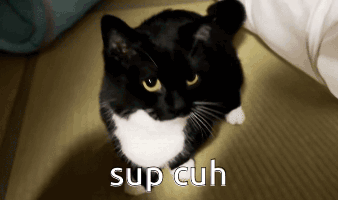
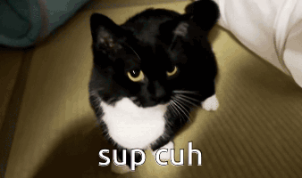
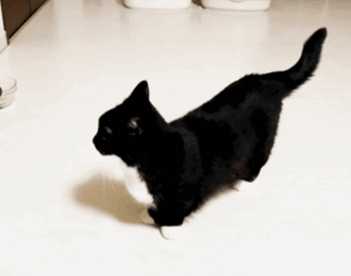
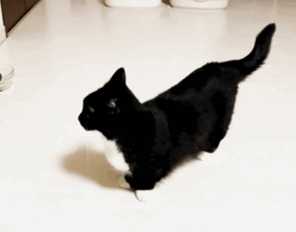
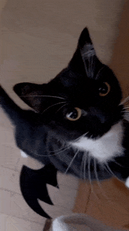
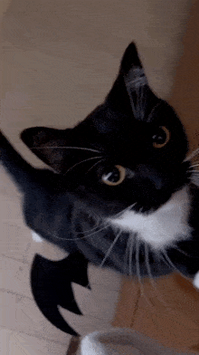

Unico Uni or Uni for short is a very popular minuet breed of cat and is posted online by his Japanese family mainly on Instagram @unico_uniuni and X @unicouniuni3. I'm a big fan of this cute fluffy tuxedo cat, so this fan page is devoted to celebrating his cuteness, his chaos, and every adorable thing he does. Welcome to Uni’s world! 🐾💖
Baby Uni was a tiny empty headed kitty when his Japanese family adopted him, and was shortly after having media posted of him as a baby. He has many pictures of him curling up in warm blankets and staring at the camera for whatever reason, not a super energetic kitten overall, but still had plenty of videos posted of him jumping after toys and such.

Uni is now a full-grown tuxedo cat, he was born on March 27, 2020 — which makes him 5 years old and soon to be 6! His social media presence is very strong now especially compared to when he was younger, being in plenty of online memes or reaction images due to his adoring fanbase and cute yet mischievous appearance. Uni spends his days doing whatever, idk I'm not his owner. However, his owners post plenty of cute or random moments of him daily for his fans, flaunting his signature tuxedo fur and adorable “:3” expression.
💖Uni Gallery💖
.gif) 

.gif)
.gif)
 

 
